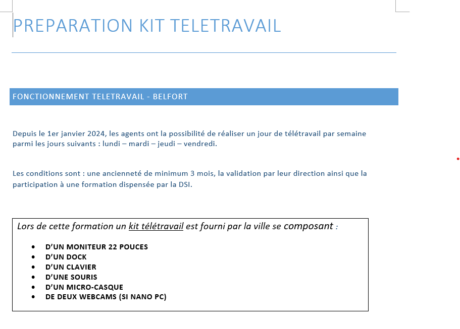

Quelques Projets

Cas GSB
Dans le cadre de mon BTS SIO option SLAM, j’ai développé VIGSB, une application web de gestion des visites pour les visiteurs médicaux de l’entreprise fictive GSB. Réalisé en PHP avec une architecture MVC, ce projet m’a permis de manipuler PhpStorm, phpMyAdmin pour la base de données locale, et GitHub pour le versionnage. J’y ai appliqué mes connaissances en programmation orientée objet, SQL et gestion des formulaires. Cette expérience m’a appris à structurer proprement mon code, à résoudre des bugs de manière autonome, et m’a donné un aperçu concret du métier de développeuse, tout en renforçant ma motivation à créer des outils utiles et bien pensés pour les utilisateurs finaux
Organisation de l'arborescence
Ce projet visait à restructurer l’arborescence des fichiers partagés au sein de la DSI, dont l’organisation était devenue chaotique avec le temps : des milliers de documents à la racine, des doublons, et des noms peu explicites.
Après un audit des contenus, j’ai proposé une réorganisation complète structurée autour de dossiers thématiques, en lien avec les pôles métiers. J’ai également défini une convention de nommage pour uniformiser les futurs dépôts. Deux propositions d’arborescence ont été soumises à ma hiérarchie, puis présentées en réunion à l’ensemble de la DSI (environ 30 personnes). Le plan retenu a été validé à l’unanimité.
J’ai ensuite mené le chantier de migration : tri, suppression des doublons, renommage, et reclassement des fichiers. Ce travail a permis d’améliorer la lisibilité, la traçabilité et l'efficacité globale dans l’accès aux documents.


Mise en Place du Télétravail
En janvier 2024, la collectivité a généralisé le télétravail à raison d’un jour par semaine, sous réserve d’éligibilité. La DSI a été mobilisée pour déployer les moyens techniques nécessaires à cette évolution.
Dans ce cadre, j’ai été formée à la préparation de matériel informatique et ai participé activement à la constitution de plus de 200 kits de télétravail (PC portables, périphériques, connectiques). J’ai également assisté aux formations obligatoires dispensées aux agents, où je veillais à la mise à jour des postes informatiques, à la configuration des outils collaboratifs, et à l’assistance technique en temps réel. Afin de faciliter la transmission des compétences, j’ai conçu une procédure interne détaillée sur la préparation des kits de télétravail. Ce support est désormais utilisé comme formation de référence pour les nouveaux arrivants.
Ce projet m’a permis de développer mes compétences en support utilisateur, en gestion de parc matériel, et en coordination logistique, tout en contribuant à une transformation majeure des modes de travail.